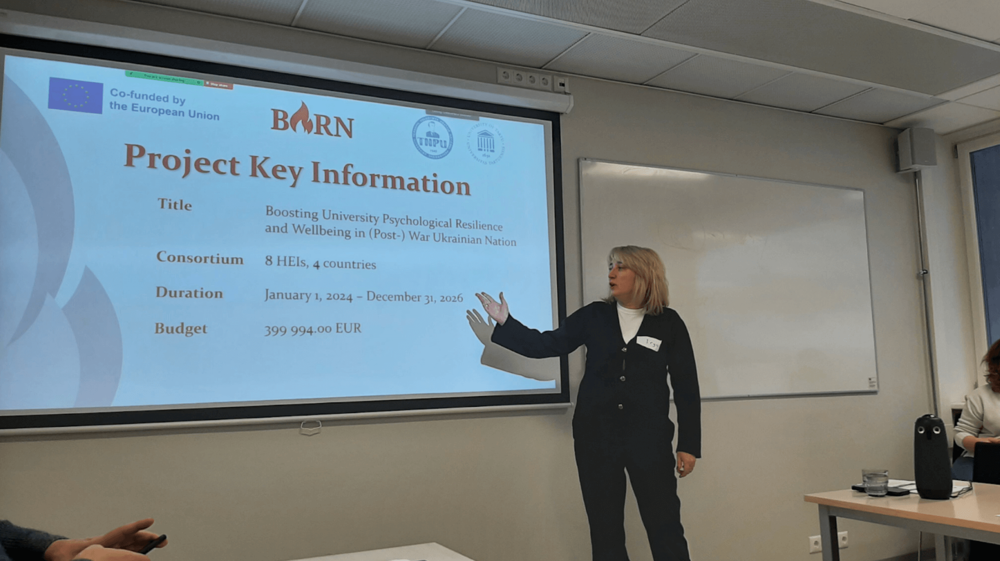
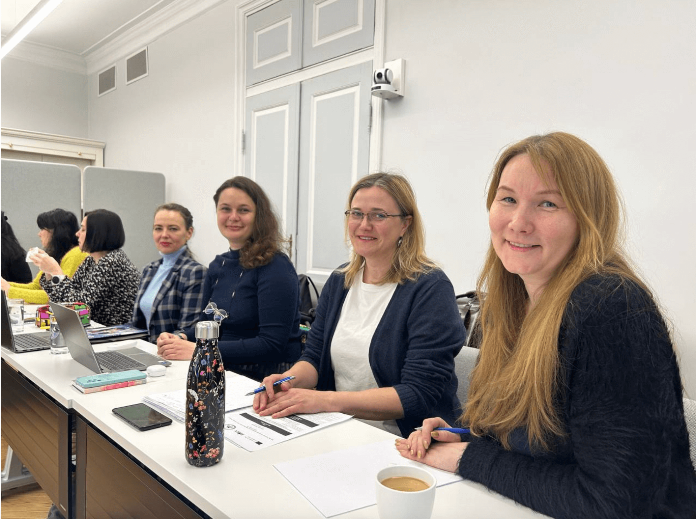

BURN" Erasmus+ KA2 Project Kick-off at University of Tartu (12-14 February 2024)
The Erasmus+ KA2 project "BURN" saw an enthusiastic launch at the University of Tartu today, marking the beginning of a collaborative journey among diverse institutions. Welcoming words from project leaders by Oleksandra Golovko (Tartu University), Iryna Zadorozhna (Ternopil Volodymyr Hnatiuk National Pedagogical University), Svitlana Shytikova (EU-Funded Project Coordinator at the National Erasmus+ Office and Higher Education Reform Experts Team in Ukraine), set the tone for the meeting filled with introductions and insights.

Representatives from participating institutions, including Ternopil Volodymyr Hnatiuk National Pedagogical University, the University of Tartu, Bogdan Khmelnitsky Melitopol State Pedagogical University, Kherson State University, Donbas State Pedagogical University, International Psychoanalytic University Berlin GGMBH, and University of Latvia, shared their backgrounds, adding richness to the project's global perspective.
Olha BIlozir took the stage for presentations of Kryvyi Rih State Pedagogical University, introduced the project team of KSPU, shared institutional experiences, and provided insights into KSPU’s respective organizations. The diversity of backgrounds and expertise brought a rich tapestry to the gathering, setting the stage for a truly global project.
During the second day of kick-off meeting representatives from partner institutions collaborated on Work Packages, addressing professionalization, improvement of university psychological services, and establishing Centers for Psychological Resilience and Wellbeing.

The final day featured insightful discussions, administrative clarity, and warm farewells. Work Packages 5, led by Kryvyi Rih State Pedagogical University, was presented by Kateryna Bondar, which focused on “Dissemination”. This included discussions on tasks, aims, deliverables, and the development of a comprehensive Dissemination Plan to effectively share project outcomes.

A tour around the University of Tartu fostered camaraderie, setting the stage for crucial discussions on partnership agreements, administrative procedures, financial considerations, and project planning. The kick-off meeting concluded with the distribution of project certificates, symbolizing a positive start to the transformative journey of the "BURN" project in Crisis Psychology and Psychological Services across European universities.

Participants left with a deepened understanding of the project's goals, setting a promising foundation for the transformative journey ahead. The "BURN" project looks forward to impactful cross-cultural exchange and education.